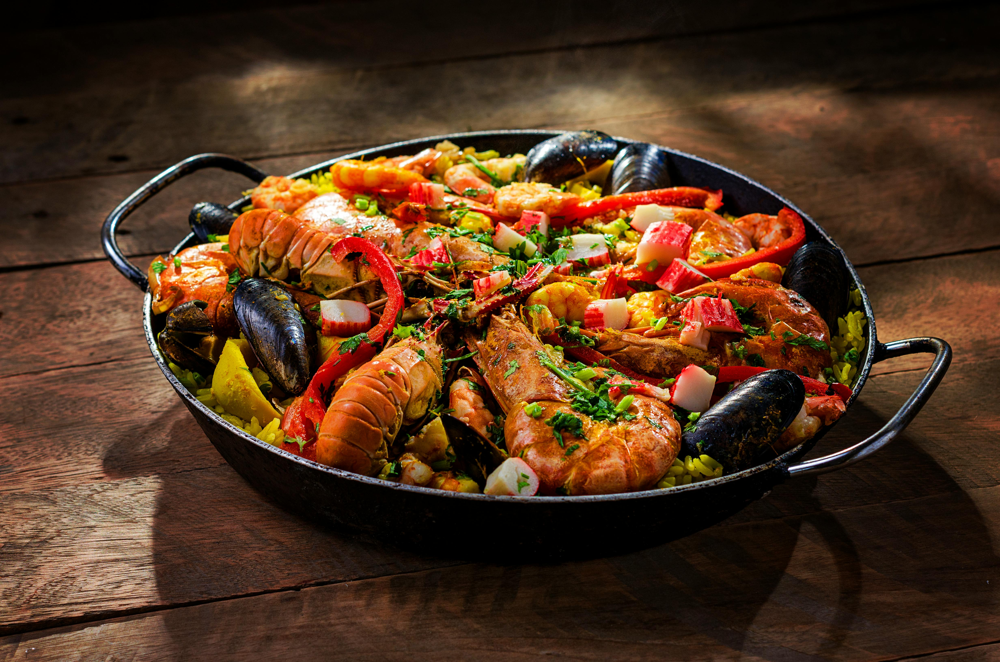
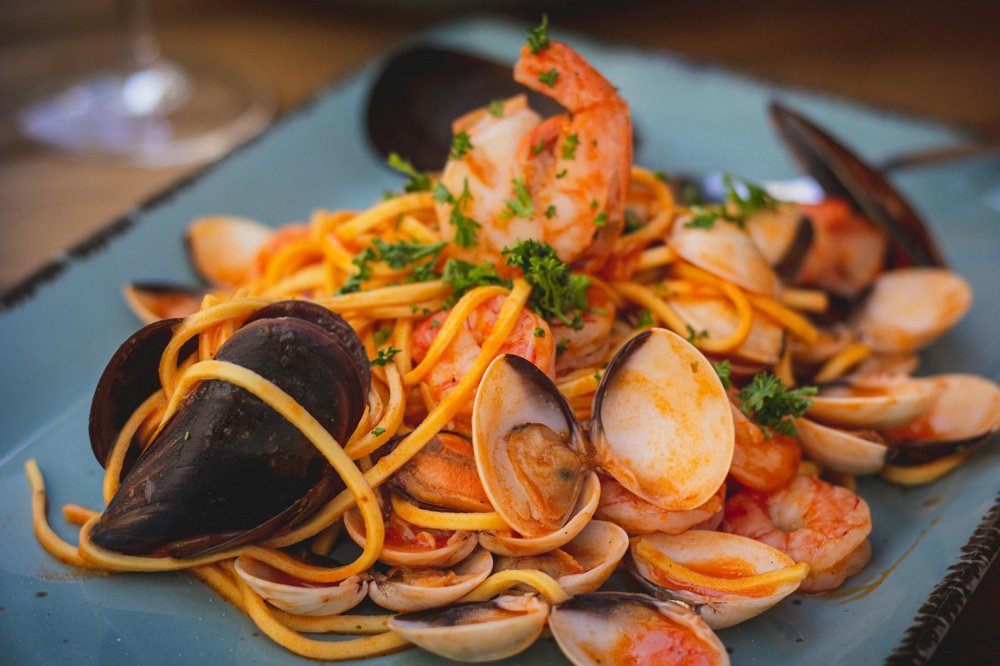
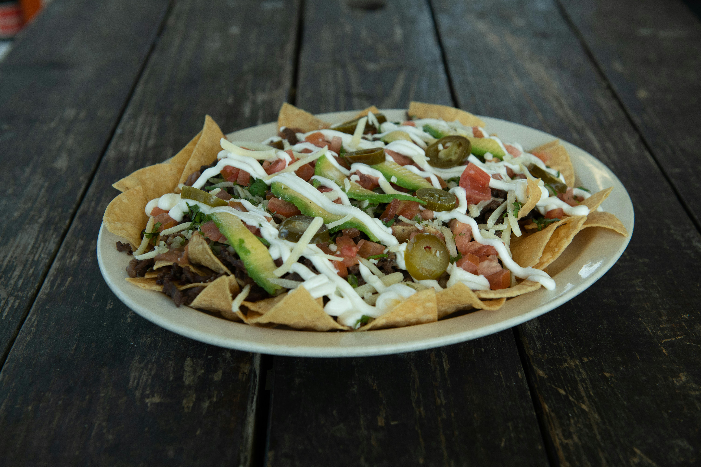
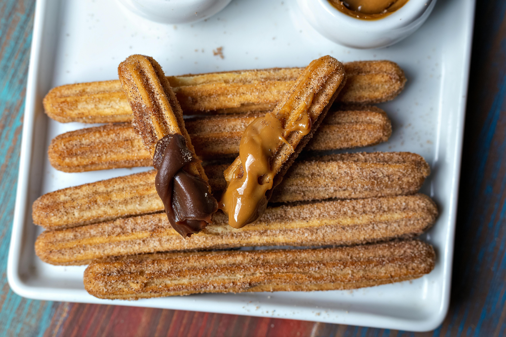

Sobre o Restaurante
Viaje pela história e cultura espanhola em nosso restaurante temático. Experimente pratos autênticos em um ambiente que reproduz a magia da Espanha. O restaurante oferece uma variedade de pratos deliciosos, preparados com ingredientes frescos e de alta qualidade.
Venha-nos fazer uma visita e descubra sabores únicos ou peça para entrega abaixo!
Produtos

Paella de frutos do mar
É preparado com arroz, frutos do mar como camarões, mexilhões, lagostins, além de temperos como açafrão e pimentões.

Espaguete com frutos do mar
Ele é preparado com massa espaguete, mariscos, camarões, mexilhões e um molho à base de tomate, alho e ervas, típico da culinária mediterrânea.

Tortilla Española
Uma omelete de batatas e cebola, geralmente servida como tapa (petisco).

Churros com Chocolate e doce de leite
Massa frita servida com chocolate e doce de leite quente para mergulhar.